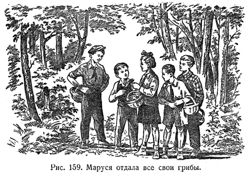
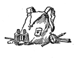

|
ПЛАНЕТА ПГ

В мою микроволновую печь проник таракан. Я
включил ее. Засверкали молнии, загрохотали
взрывы, повалил густопсовый дым. Печь сгорела.
Однако таракан, как ни в чем не бывало, довольно
топорща усы вышел из окружения и горделивым
Радуевым скрылся в горах посуды.
Был дом - и нет дома. Полет тела. Вместо воронки -
конус. Сегодня там, а завтра - здесь. Вернее, бомба
там, а взрыв - здесь. Или наоборот. Я запутался.
И вспомнил. Тот волшебный лес. Куда я недавно
вошел. Перло так мощно, как никогда. Мягкий
серебристый мох устилал тропу. Я заскользил по
зеркальной глади озер. Там и сям мелькали то
красные, а то зеленые огоньки. Пытался поймать
светлячка. Верхушки деревьев иногда напоминали
целующихся влюбленных, а иногда диковинных
взъерошенных дикобразов, сражающихся ветвистыми
мечами. Внезапно я понял, что иду не по тропе, а по
широкой дороге южного города. Скорее всего Крым,
подумал я. Однако приглядевшись к автобусной
остановке, обнаружил, что это не остановка. А
деревенский дом. Значит, Подмосковье, дача,
успокоил себя я. Присмотревшись повнимательнее,
осознал, что это никакая ни дача, а обычное
дерево. Ага, то есть я и не на дороге вовсе, а на
тропе, в том самом лесу. Все хорошо. Но дерево
незамедлительно превратилось в качели...
Час за часом. Это не прекратится никогда - в ужасе
успел подумать. Мне не вырваться. Никогда не
вернуться обратно. Но что значит - вырваться? И
как я пойму, что вырвался? Как отличу грань? Где
гарантии, что то состояние, куда я вернусь, не
будет лишь одним из звеньев бесконечной череды
галлюцинаций?
И вот я и не знаю, вернулся или не вернулся. И где
остальные. Да, чуть не забыл. Когда мы входили в
лес, сквозь нас прошли инопланетяне. От них
разило незнакомым и неприятным запахом. Они пели
гимн Советскому Союзу, не обращая на нас никакого
внимания.
У меня есть друг. В его дворе находится о/м. По
утрам он высовывается в окошко и кричит: "А на
нашей планете нет ментов!" Так вот, остается
надеяться, что мы не вернулись. Но даже если
ненароком вернулись - пустяки. Ибо не существует
такого понятия - "вернулись". Глаз не
способен остановить картинку. Осколки стекла
окажутся пестрыми бусинками, а техногенный
мутант - хоть на миг - превратится в миролюбивого
дельфина.
Так что здесь не задержимся. Мы легко пройдем их
насквозь. Ведь на нашей планете нет ментов. Нет
дома и нет бомбы. Там растут цветы. Чудовищной
красоты.
Ильяc Фалько

|